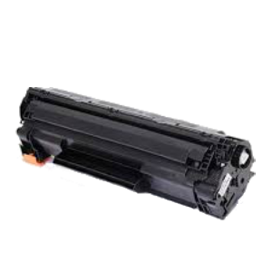
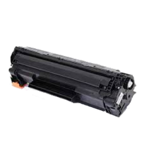

Tecnologia. Inovações
Saiba tudo sobre toner
por Toner Expert
de 26/05/2014
As impressoras a laser utilizam uma tecnologia diferente para imprimir imagens no papel. Ao invés dos famosos cartuchos de tinta, utilizados nas impressoras jato de tinta (daí o seu nome), elas usam O Toner, que possui uma tinta especial em pó.
Impressoras a laser contam com um processador e memória RAM. Quando você manda uma imagem ou texto para impressão, esse arquivo é carregado na memória RAM e então enviado para o processador, que analisa a imagem e define as partes que precisam de cor e as que podem ficar em branco. Os processadores da maioria das impressoras a laser possuem uma frequência de 200 a 300 MHz, bem acima dos chips usados nas impressoras jato de tinta. Isso é necessário devido ao grande número de cálculos que ele precisa realizar.
Estas impressoras tem ainda um componente chamado cilindro fotorreceptor, que pode ser carregado com energia eletrostática. Um outro componente, chamado de fio de corona, carrega todo o cilindro com carga positiva. Então o canhão de laser da impressora, usando as informações do processador, passa a descarregar determinadas partes do cilindro fotorreceptor, usando carga negativa. Assim, o cilindro fica dividido em cargas negativas e positivas, formando uma imagem com energia eletrostática.
Esta é a hora em que o toner entra em cena. Atualmente as fabricantes utilizam um pigmento em pó de carbono adicionado de alguns polímeros, tais como o Estireno Acrilato Copolímero. O toner joga este pó, que está carregado positivamente, sobre o cilindro fotorreceptor. Como cargas opostas se atraem, o pó de carbono vai “grudar” apenas nas áreas do cilindro com carga negativa. Assim a imagem, antes eletrostática, ganha a camada de tinta.
Particulas de Pó
Finalmente, quando a impressora puxa o papel da bandeja, ele é carregado negativamente. Assim, ao passar sob o cilindro fotorreceptor ele atrairá as partículas de pó, pois elas estão com carga positiva. A esteira por onde o papel passa e o cilindro possuem a mesma velocidade, para que o pigmento seja aplicado de forma correta. Ao mesmo tempo o cilindro fotorreceptor é descarregado, para que não atraia o papel de volta.